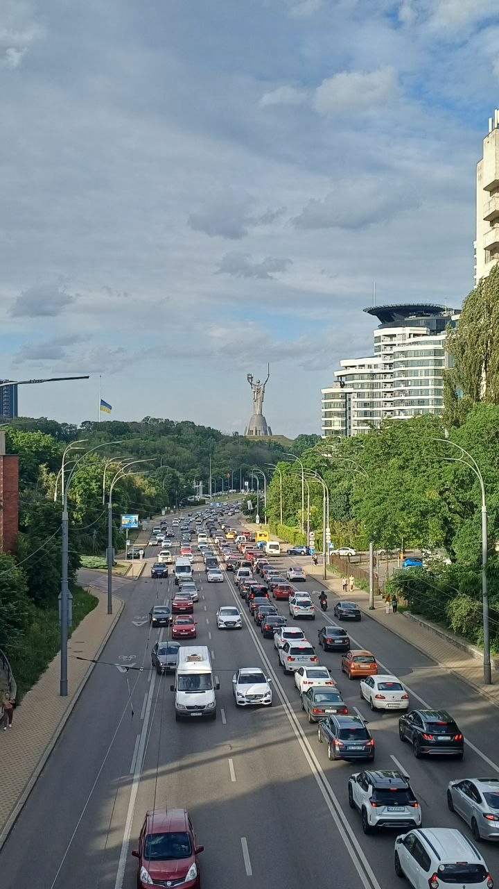

Я народилась 5 серпня 2006 року в місті Київ.
Закінчила Спеціалізовану школу №173 м. Києва(Зараз Ліцей №173). На даний момент навчаюся в Національному технічному університеті України "Київський політехнічний інститут імені Ігоря Сікорського".
Київ — це сучасна європейська столиця, що ніколи не спить. Місто вражає своєю динамічністю: тут стародавні церкви межують з ультрасучасними бізнес-центрами, а затишні дворики Подолу — з гамірними проспектами. Завітайте на Хрещатик, головну артерію міста, де завжди вирує життя, або відкрийте для себе креативні простори на Лівому березі. Київ пропонує безліч розваг на будь-який смак: від модних ресторанів і нічних клубів до мистецьких галерей та вуличних фестивалів. Це місто, яке постійно змінюється, але завжди залишається собою — живим, енергійним і повним можливостей.
Це фото Києва